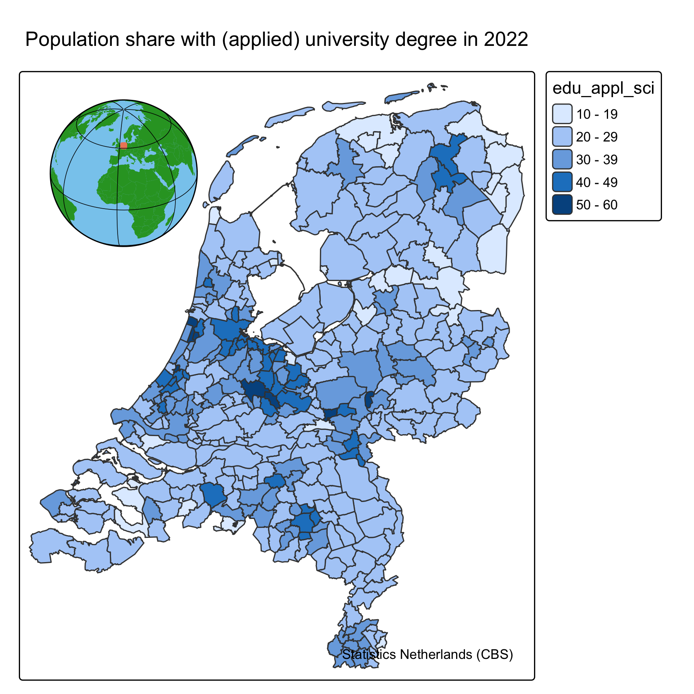
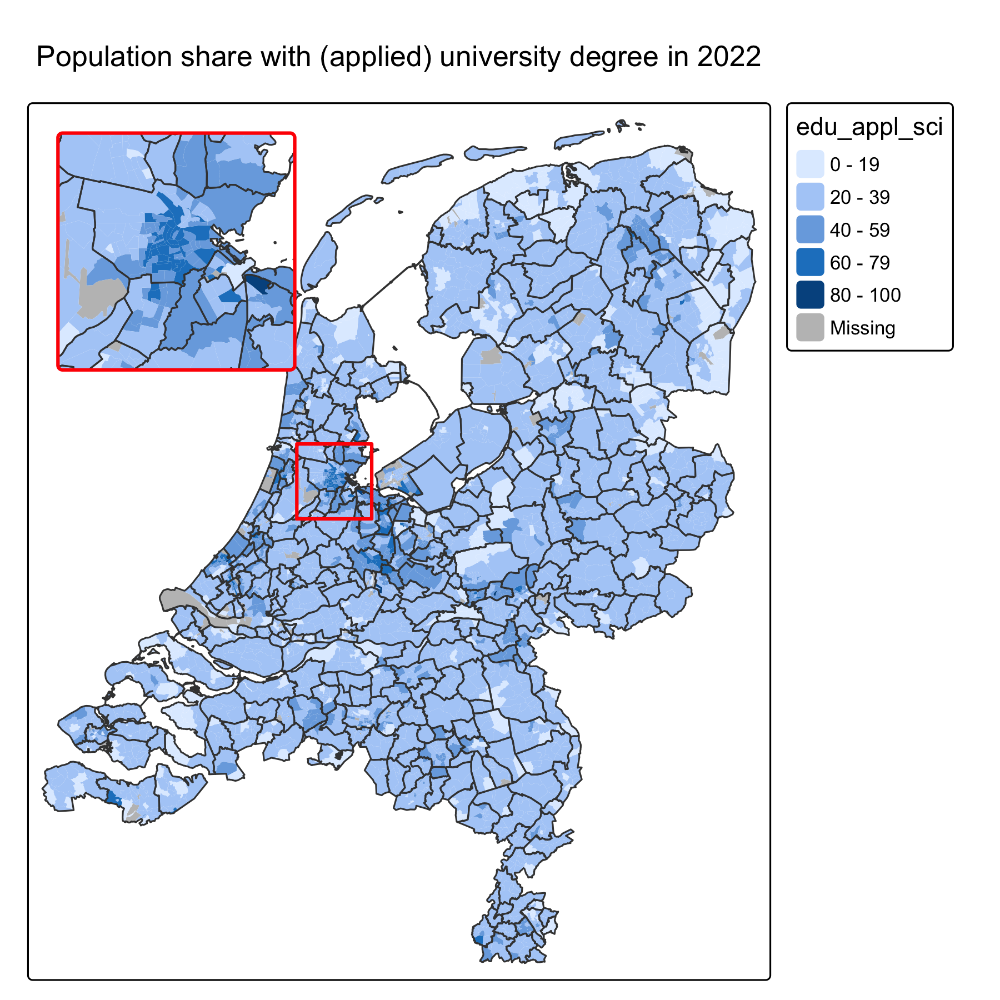
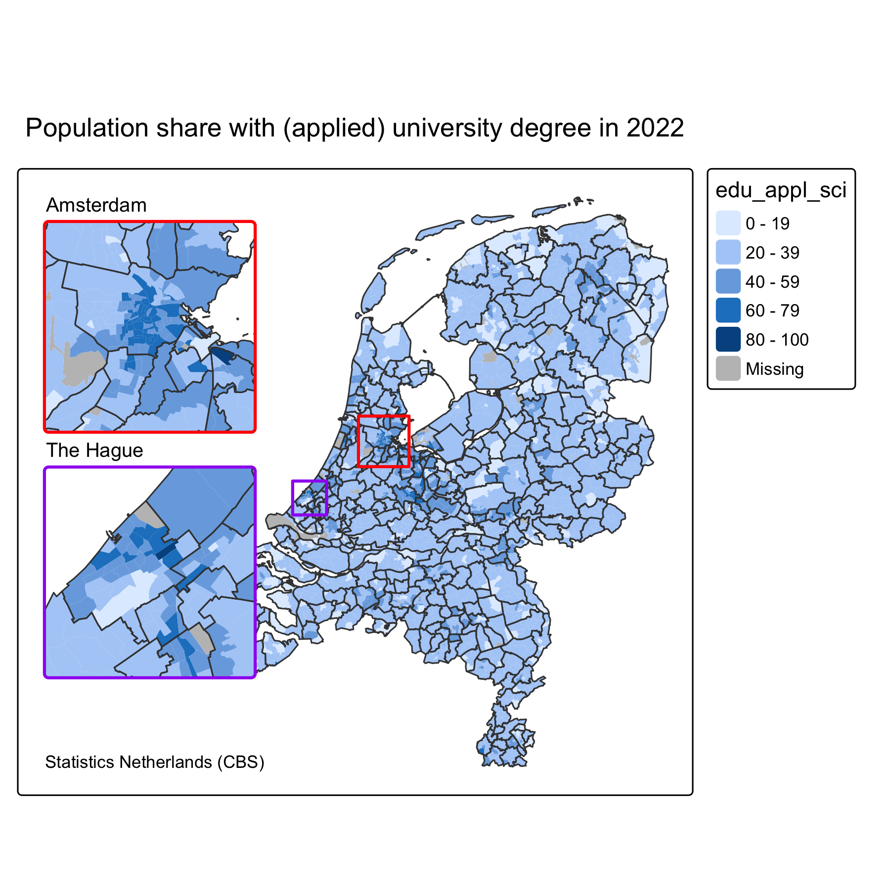
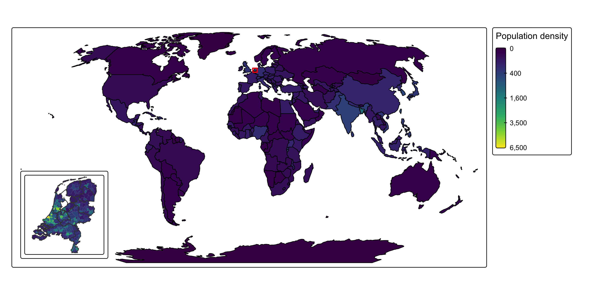
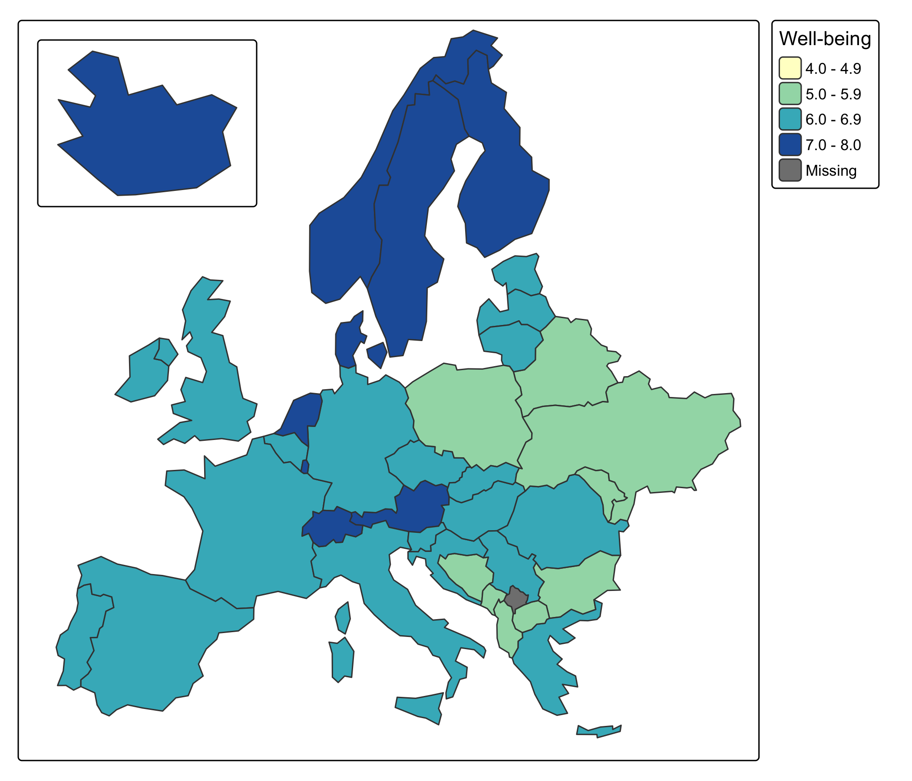
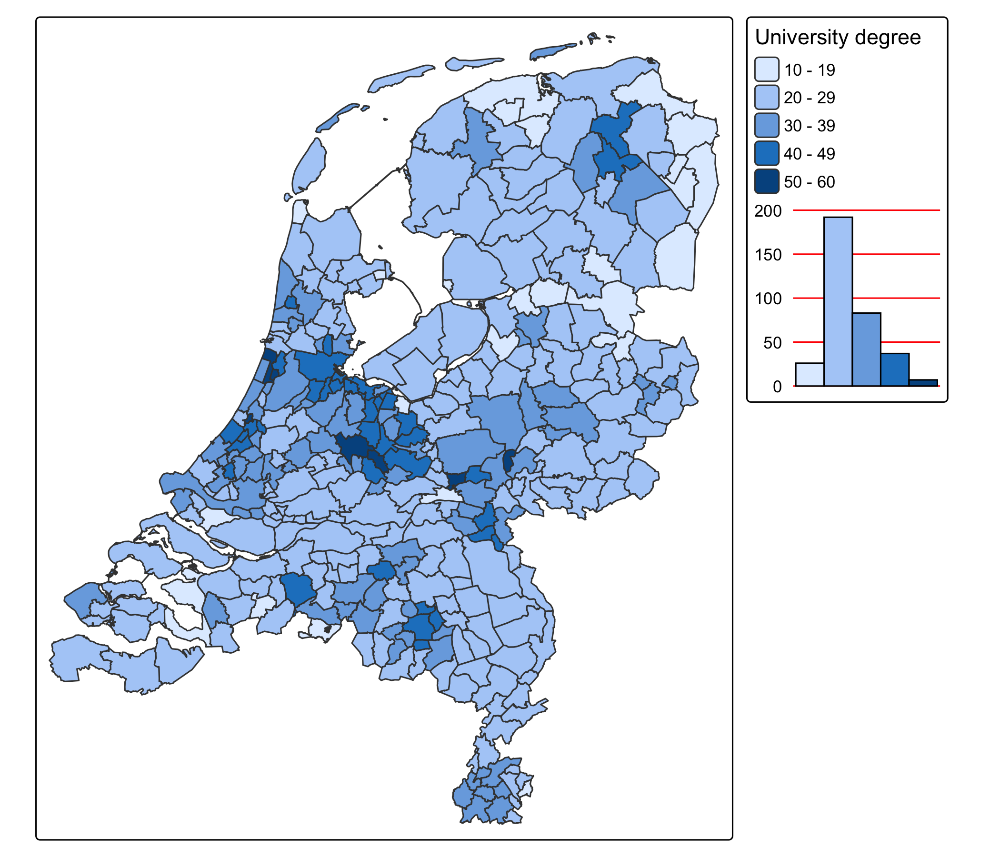
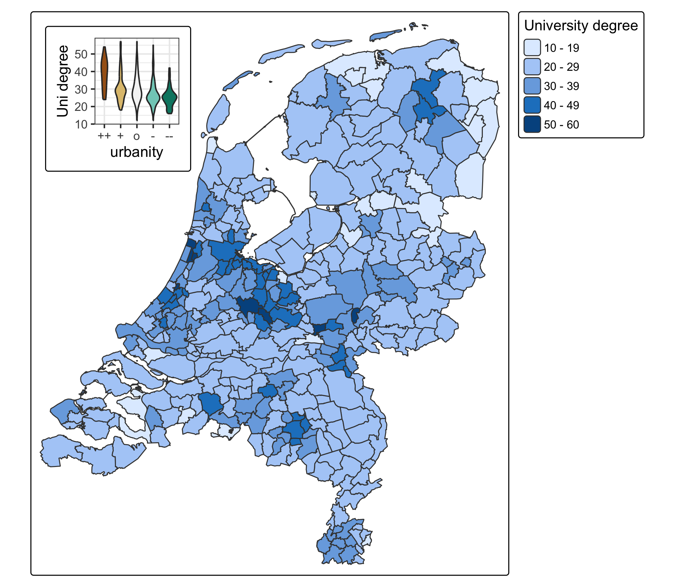
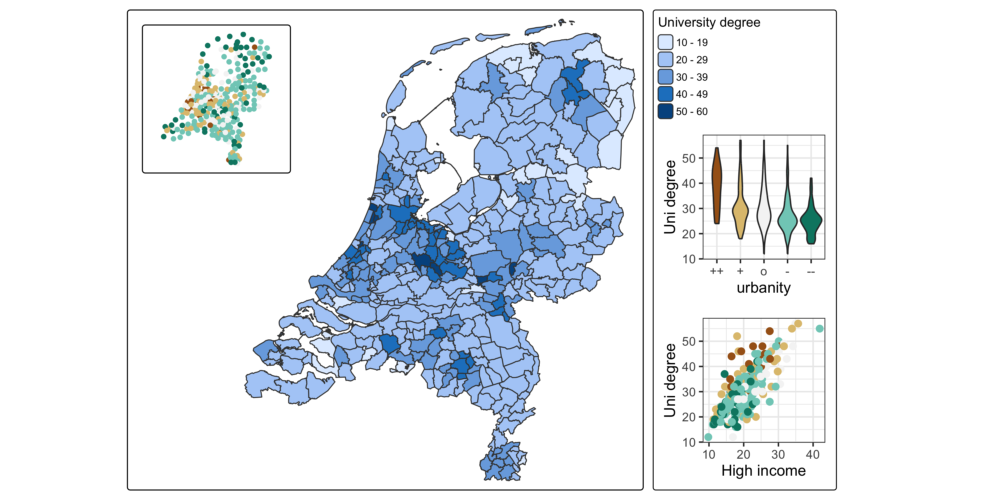
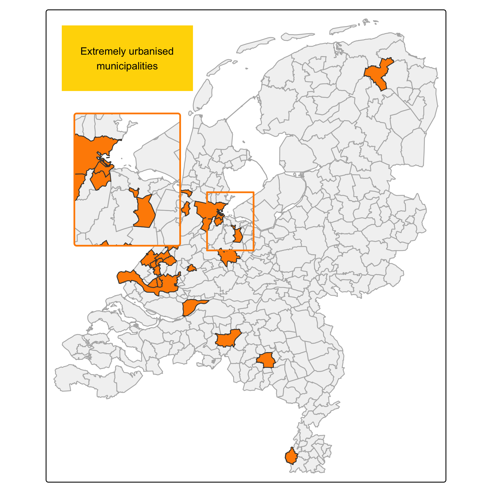
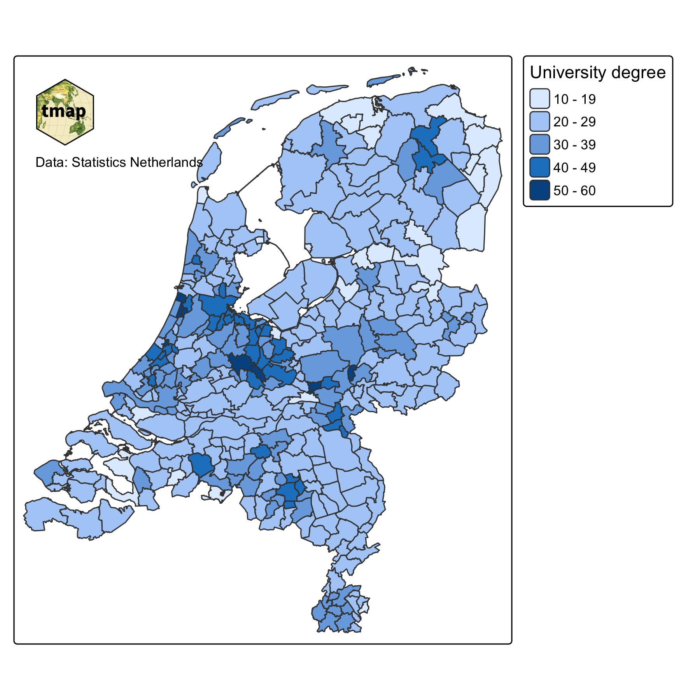

tm_shape(NLD_muni) +
tm_polygons(fill = "edu_appl_sci") +
tm_title("Population share with (applied) university degree in 2022") +
tm_credits("Statistics Netherlands (CBS)") +
tm_minimap(position = c("left", "top"))Advanced Static Cartography in R
Session 10: Insets
Martijn Tennekes
Insets
What is an inset?
A small map, chart or image embedded in the main map.
- Minimap (zoomed out): where on earth is the main map located? →
tm_minimap() - Inset map (zoomed in): details of an area that is too cluttered at the main map’s scale →
tm_inset() - Inset chart: a chart that complements the map, e.g. a ggplot2 plot →
tm_inset() - Custom elements: images, grid graphics →
tm_inset(),tm_logo()
Both tm_inset() and tm_minimap() are map components: they are positioned like legends, titles and scale bars.
tm_inset() accepts many objects
Input x |
Result |
|---|---|
bounding box (sf::st_bbox(), tmaptools::bb()) |
the same map, zoomed in on the bounding box |
| tmap object | a different map |
| ggplot2 object | a chart |
| grob (grid graphical object) | any custom graphic |
| image file name | an image |
Inset (zoomed-in) maps are implemented in "plot" mode only: in interactive modes, the user can zoom in.
Minimaps
Minimap
Minimap

Minimap: notes
- The implementation in plot mode is experimental (new as of tmap 4.2)
- It features a small globe (orthographic projection); it takes a few seconds to render
- There are no options yet to change its appearance
- In
"view"mode the minimap is interactive
Inset maps
The same map, zoomed in
library(tmaptools)
bb_ams = bb(NLD_muni[NLD_muni$name == "Amsterdam", ], ext = 1.2)
tm_shape(NLD_dist) +
tm_polygons(fill = "edu_appl_sci", col = NULL) +
tm_shape(NLD_muni) +
tm_borders() +
tm_title("Population share with (applied) university degree in 2022") +
tm_inset(bb_ams, position = c("left", "top"),
box_frame.color = "red", main_frame.color = "red")The same map, zoomed in

Bounding boxes
sf::st_bbox(): from a spatial object, or from coordinates:
tmaptools::bb(): from a spatial object (withextto extend it), or from a place name via OpenStreetMap (tmaptools::geocode_OSM()):
Multiple inset maps
bb_hag = bb(NLD_muni[NLD_muni$name == "'s-Gravenhage", ], ext = 1.2)
tm_shape(NLD_dist) +
tm_polygons(fill = "edu_appl_sci", col = NULL) +
tm_shape(NLD_muni) +
tm_borders() +
tm_title("Population share with (applied) university degree in 2022") +
tm_credits("Statistics Netherlands (CBS)", position = c("left", "bottom")) +
tm_title("Amsterdam", size = 0.8, position = c("left", "top")) +
tm_inset(bb_ams, position = c("left", "top"),
box_frame.color = "red", main_frame.color = "red") +
tm_title("The Hague", size = 0.8, position = c("left", "top")) +
tm_inset(bb_hag, position = c("left", "top"),
box_frame.color = "purple", main_frame.color = "purple") +
tm_layout(inner.margins = c(0.05, 0.35, 0.05, 0.05))Multiple inset maps

What happens here?
- Components with the same position are stacked: title, inset, title, inset
- The order of stacking follows the order of the calls (or the
zargument) box_frame: the box in the main map that shows the area of the insetmain_frame: the frame around the inset mapinner.marginscreates room on the left for the insets
Inset arguments
| Argument | Meaning |
|---|---|
height, width |
size, in number of text line heights |
position |
position (as other components) |
group_id |
component group (see tm_components()) |
frame, bg |
general component frame and background |
box_frame, box_frame.color, .lwd, .lty |
box in the main map |
box_bg, box_bg.color, box_bg.alpha |
background of that box |
main_frame, main_frame.color, .lwd, .r |
frame around the inset map |
A different map as inset
NLD_muni$pop_est_dens = as.numeric(NLD_muni$population / NLD_muni$area)
tm_NLD = tm_shape(NLD_muni) +
tm_polygons(fill = "pop_est_dens",
fill.legend = tm_legend_hide(),
fill.scale = tm_scale_continuous_sqrt(values = "viridis", limits = c(0, 6500)),
col = NULL) +
tm_shape(NLD_prov) +
tm_borders()
tm_shape(World) +
tm_polygons(fill = "pop_est_dens",
col = "black",
fill.scale = tm_scale_continuous_sqrt(values = "viridis", limits = c(0, 6500)),
fill.legend = tm_legend("Population density")) +
tm_inset(tm_NLD, position = c("left", "bottom")) +
tm_crs("+proj=robin")Note the shared limits, so that the colors of the inset and main map are comparable.
A different map as inset

Inset map with a different geography
Common use case: remote territories, e.g. islands, that do not fit in the main map extent.
EU = World[World$continent == "Europe" & World$name != "Russia", ]
bb_eu = sf::st_bbox(c(xmin = 2500000, ymin = 1400000,
xmax = 6500000, ymax = 5400000), crs = 3035)
tm_iceland = tm_shape(World[World$name == "Iceland", ], crs = 3035) +
tm_polygons("well_being",
fill.scale = tm_scale_intervals(breaks = 4:8, values = "brewer.yl_gn_bu"),
fill.legend = tm_legend_hide()) +
tm_layout(frame = FALSE)
tm_shape(EU, crs = 3035, bbox = bb_eu) +
tm_polygons("well_being",
fill.scale = tm_scale_intervals(breaks = 4:8, values = "brewer.yl_gn_bu"),
fill.legend = tm_legend("Well-being")) +
tm_inset(tm_iceland, position = c("left", "top"), height = 6, width = 8)Inset map with a different geography

Inset charts
tmap charts
Each map variable has a .chart argument (session 2). Extra ggplot2 code can be added:
tmap charts

ggplot2 charts
Much more flexibility: add any ggplot2 plot via tm_inset().
g1 = ggplot(NLD_muni, aes(x = urbanity, y = edu_appl_sci, fill = urbanity)) +
geom_violin() +
scale_x_discrete(labels = c("++", "+", "o", "-", "--")) +
scale_fill_brewer(guide = "none", type = "div") +
scale_y_continuous("Uni degree") +
theme_bw()
tm_shape(NLD_muni) +
tm_polygons("edu_appl_sci",
fill.legend = tm_legend("University degree")) +
tm_inset(g1, position = c("left", "top"))ggplot2 charts

Combining insets
g2 = ggplot(NLD_muni, aes(x = income_high, y = edu_appl_sci, color = urbanity)) +
geom_point(size = 2) +
scale_color_brewer(guide = "none", type = "div") +
labs(x = "High income", y = "Uni degree") +
theme_bw()
tm_urb = tm_shape(NLD_muni) +
tm_dots(fill = "urbanity",
fill.scale = tm_scale(values = "brewer.br_bg"),
fill.legend = tm_legend_hide()) +
tm_layout(frame = FALSE)
tm_shape(NLD_muni) +
tm_polygons("edu_appl_sci",
fill.legend = tm_legend("University degree", group_id = "right")) +
tm_inset(g1, group_id = "right", height = 10, width = 10) +
tm_inset(g2, group_id = "right", height = 10, width = 10) +
tm_inset(tm_urb, group_id = "topleft", position = c("left", "top"), box_frame = FALSE) +
tm_components(group_id = "right", position = tm_pos_out("right", "center")) +
tm_layout(inner.margins = c(0.02, 0.3, 0.02, 0.02))Combining insets

What happens here?
- Legend and both ggplot2 charts share
group_id = "right"→ stacked outside the map on the right tm_components(group_id = "right", ...)sets the position of the whole group- The dot map of urbanity is a small tmap inset at the top left
- Shared colors (
brewer.br_bg/type = "div") link the charts and the urbanity map
Custom inset elements
Grid graphics
Any grid graphical object (grob) can be inset:
note = grid::gList(
grid::rectGrob(gp = grid::gpar(fill = "gold", col = NA)),
grid::textGrob("Extremely urbanised\nmunicipalities",
gp = grid::gpar(fontsize = 9)))
tm_shape(NLD_muni) +
tm_polygons("grey95", col = "grey70") +
tm_shape(NLD_muni[NLD_muni$urbanity == "extremely urbanised", ]) +
tm_polygons("darkorange") +
tm_inset(note, position = c("left", "top"), height = 4, width = 8) +
tm_inset(bb_Randstad, position = c("left", "top"), height = 10, width = 8,
box_frame.color = "darkorange", main_frame.color = "darkorange")Grid graphics

Images and logos
tm_logo() for logos; tm_inset("file.png") for any image.
Images and logos

Grouping options
tm_components() controls a group of components:
| Argument | Meaning |
|---|---|
position |
position of the group |
stack |
"vertical" or "horizontal" |
frame_combine |
one frame around all components of the group |
equalize |
equal widths (vertical stack) or heights (horizontal stack) |
offset, stack_margin |
distance to the frame, and between components |
frame, bg.color, bg.alpha |
frame and background of the group |
Design considerations for insets
- Purpose: context (zoomed out) or detail (zoomed in)? Don’t mix them up in one inset
- Link inset and main map: box frame in the main map, same color for the inset frame
- Use the same scale (colors, limits) in inset and main map, or make the difference explicit
- Place insets in empty space (sea, outside the study area); avoid covering data
- Keep insets simple: no duplicate legends, fewer labels
- Use
tmap_design_mode()to check the layout
Recap
tm_minimap(): zoomed-out context (globe)tm_inset(): bounding box (zoomed in), tmap object, ggplot2 object, grob, or image- Insets are map components:
position,group_id,tm_components() box_frameandmain_framelink the inset to the main map- Further reading: inset maps | ggplot2 in tmap | grouping components | positions